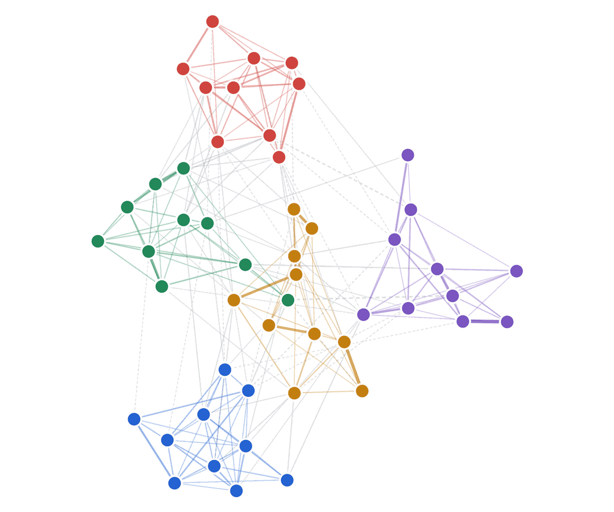

I love to build. Always ready to learn.
I'm Bala Kausik Vazrala, a computer science student at UC Irvine specializing in intelligent systems, with a minor in business management. I'm open to software engineering, data science, and machine learning internships.

Each dot is one of 50 personality survey questions. Lines join questions whose answers my CS 179 model learned to predict from one another. It was never told the Big Five traits exist, yet the questions sorted into exactly these five groups.
- Extraversion
- Neuroticism
- Agreeableness
- Conscientiousness
- Openness
Recent projects
All project details-
Briefly
An ESP32 desk station that reads you the morning without handing you a phone.
CS 147, 2026
-
Yield
Driving agents that differ only in how much a crash costs them, and what caution costs in speed.
CS 175, 2026
-
Big Five graphical models
A model that found the five personality traits in raw survey answers without being told they exist.
CS 179, 2026
-
ASL computer control
Typing and media playback driven by hand signs alone, at 97% typing accuracy in testing.
LA Hacks, 2026
-
Tweet sentiment and emoji prediction
A BERT classifier that reads tweets and guesses the emoji, with a public dashboard.
UCI Datathon, 2026